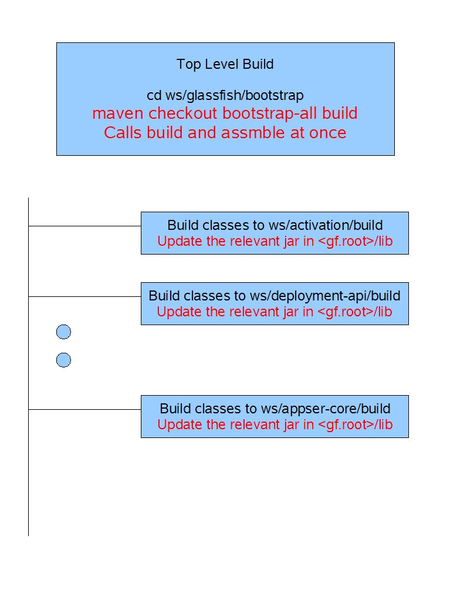
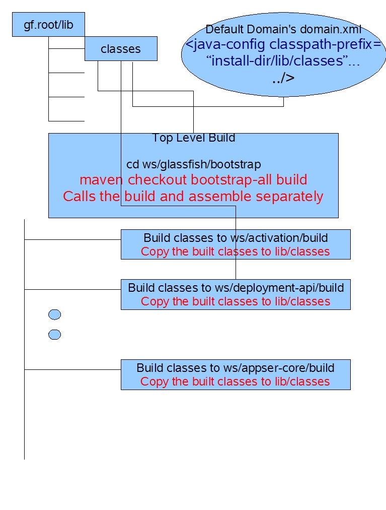

Ideas to Enhance GlassFish Build
1 Introduction
2 Ideas
2.1 Idea1 --- Feb 2006
One of the main strengths of today's build is it is developer friendly once
the base build from the top-level module is done. Once the user does maven checkout
bootstrap-all build configure-runtime, a runtime (appserver domain) that uses
the build is ready to go.
The top level build is shown in the diagram below.

Here is the most frequent scenario after the user does the build and runtime
configuration once.
- I want to change my code in module foo.
- cd glassfish/foo
- change code
- maven build
After that, user just has to restart the GlassFish Server by doing asadmin
stop-domain and start-domain.
So far so good.
A problem perceived by many developers is the update of the mammoth appserv-rt.jar
(which contains most of the appserver's runtime classes/interfaces) during the
build process.
The idea to improve here is to do the following:
- Build the sources from top-level once. The build process is separated from
the assembly process. Thus the top level build will first call build on all
the modules. Then, the assembly will be done explicitly.
- Each module's build used to do the assembly in the same "build"
target. This will change.
- Each module's build only builds the classes in <module-dir>/build
and copies those classes to ${GF_ROOT}/lib/classes
- The top-level call to the build will be something like "build-but-don't-copy"
so that the top-level build never creates any classes in lib/classes.
- During the configure-rutime goal, we only add "${com.sun.aas.installRoot}/lib/classes"
to the classpath-prefix of appserver VM. This way, classes built by the developers
take the precedence over the other versions of the same classes in say appserv-rt.jar.

Advantages:
- No change to the nightly build. In general, no major change.
- If the developer wants to be absolutely sure, they just do "maven clean
clobber bootstrap build configure-runtime" from glassfish/bootstrap.
When the developer does this, it will not generate the temporary lib/classes
directory and hence it will mimic a clean product build.
Disadvantages:
- A slight disadvantage is copying of classes to two locations upon building
it from separate modules. But that's OK and safe, I think.
TOC
Introduction
Ideas
Idea1
$Author: km105526 $
$Id: enhance-build.html,v 1.1 2006/02/04 02:06:06 km105526 Exp $